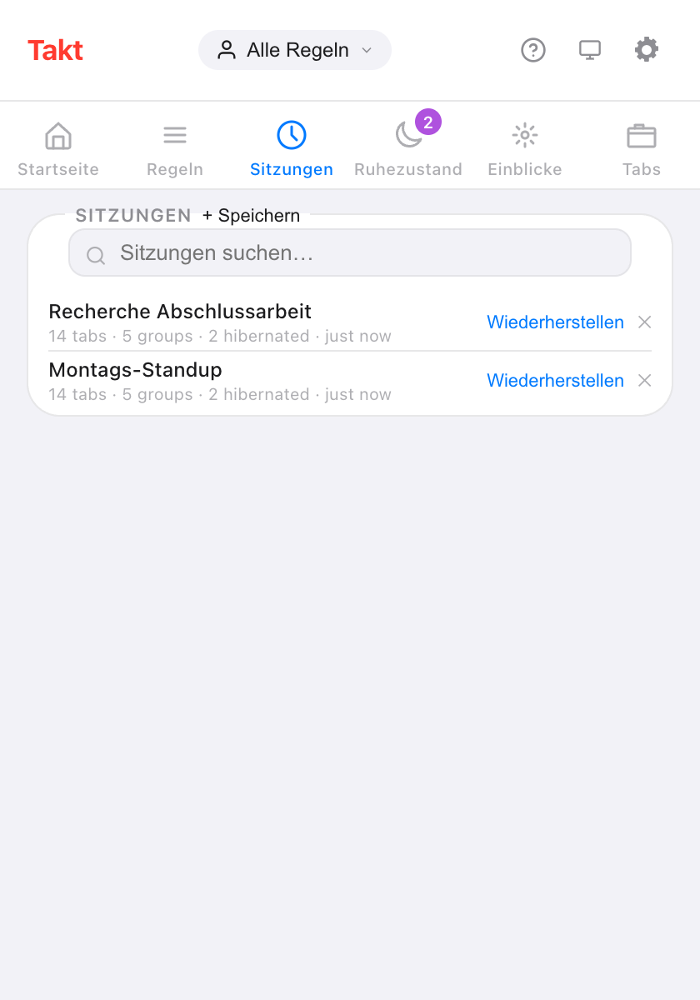
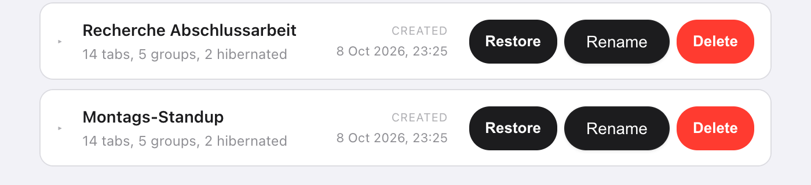

Kurz gesagt: Öffnen Sie im Takt-Popup Sitzungen, klicken Sie auf + Speichern, vergeben Sie einen Namen und wählen Sie Dieses Fenster oder Alle Fenster. Mit Wiederherstellen erhalten Sie später dieselben Tabs zurück, in denselben benannten, farbigen Gruppen.
- Speichert jeden Tab, jede Gruppe (Name, Farbe, Einklappzustand), lose Tabs und Ihre Liste hibernierter Tabs.
- Wiederherstellen in einem neuen Fenster oder anstelle des aktuellen.
- Bis zu 50 Sitzungen, gespeichert auf Ihrem Computer. Premium
Warum reicht Chromes „Zuletzt geöffnete Seiten öffnen“ nicht?
Für eine Aufgabe reicht es. Schalten Sie es ein, und Chrome öffnet beim Start die Tabs Ihrer letzten Sitzung wieder. Wenn das alles ist, was Sie brauchen, brauchen Sie keine Erweiterung.
An seine Grenzen kommt es, wenn Sie zwischen verschiedenen Arbeiten wechseln. Die Tabs für Ihre Abschlussarbeit, für das Montags-Standup und für die Reiseplanung können nicht alle „die letzte Sitzung“ sein. Schließen Sie das Fenster der Abschlussarbeit, um Platz für das Standup zu schaffen, und deren Tabs sind aus dieser Liste verschwunden.
Eine benannte Sitzung ist ein Lesezeichen für einen ganzen Arbeitsbereich. Sie schließen das Fenster ohne Sorge, denn Sie holen es über seinen Namen zurück.
Wie speichere ich eine Tab-Sitzung?
- Installieren Sie Takt aus dem Chrome Web Store.
- Öffnen Sie das Popup und gehen Sie zum Bereich Sitzungen.
- Klicken Sie auf + Speichern und geben Sie einen Namen mit bis zu 60 Zeichen ein. Namen müssen eindeutig sein.
- Wählen Sie Dieses Fenster (Standard) oder Alle Fenster und klicken Sie auf Speichern.

Was hält eine Sitzung fest?
| Gespeichert | Details |
|---|---|
| Tabs | URL und Titel jedes Tabs |
| Tab-Gruppen | Name, Farbe, Einklappzustand und welche Tabs zu jeder gehören |
| Lose Tabs | Tabs außerhalb jeder Gruppe |
| Fenster | Ein Fenster, oder mit Alle Fenster jedes normale Fenster |
| Hibernierte Tabs | Ihre Liste hibernierter Tabs, die beim Wiederherstellen wieder dort landet |
Chrome erlaubt Erweiterungen nicht, chrome://-, about:- oder Erweiterungsseiten zu öffnen, deshalb werden diese Tabs übersprungen.
Wie stelle ich eine Sitzung wieder her?
Klicken Sie auf Wiederherstellen. Ein Dialog bietet zwei Modi an:
- In neuem Fenster öffnen. Ihr aktuelles Fenster bleibt, wie es ist.
- Aktuelles Fenster ersetzen. Die gespeicherten Tabs öffnen sich im aktuellen Fenster, danach schließen sich die Tabs, die vorher dort waren.
Der Dialog zählt 7 Sekunden herunter und stellt dann im gewählten Modus wieder her. Klicken Sie im Dialog auf Wiederherstellen, um nicht zu warten, oder auf Abbrechen. Bei einer Sitzung mit mehreren Fenstern folgt das erste Fenster Ihrer Wahl, und jedes weitere öffnet sich als neues Fenster.
Kann ich Sitzungen umbenennen oder automatisch speichern?
Beides ja.
- Umbenennen: Doppelklicken Sie im Popup auf einen Namen oder nutzen Sie Rename im Tab Sessions der Optionsseite. Mit Enter speichern.
- Automatisch speichern: Schalten Sie unter Settings Automatisch speichern beim Schließen ein. Wenn Sie ein Fenster schließen, werden seine Tabs als Sitzung gespeichert, benannt mit „Auto-Speicherung“ plus Datum und Uhrzeit.
Auf der Optionsseite können Sie eine Sitzung außerdem aufklappen und vor dem Wiederherstellen jede Gruppe und jeden Tab darin sehen.

Takt-Sitzungen im Vergleich zu Chromes eingebauten Optionen
| Chrome „Zuletzt geöffnete Seiten öffnen“ | Takt-Sitzungen | |
|---|---|---|
| Wie viele | Die letzte Sitzung | Bis zu 50, benannt |
| Was gespeichert wird | Die Tabs, die beim letzten Mal offen waren | Jeder gespeicherte Schnappschuss oder eine automatische Speicherung beim Schließen eines Fensters |
| Wann wiederhergestellt wird | Beim Start von Chrome | Wann immer Sie auf Wiederherstellen klicken |
| Kosten | Kostenlos, eingebaut | Premium |
Was Sitzungen nicht tun
- Sie bleiben auf diesem Computer. Sitzungen liegen im lokalen Speicher von Chrome und folgen nicht Ihrem Google-Konto. Um sie zu übertragen, nutzen Sie ein Backup oder eine Synchronisierung.
- Sie sind Schnappschüsse. Eine gespeicherte Sitzung ändert sich nicht, wenn Sie das Fenster ändern. Speichern Sie erneut unter einem neuen Namen, um eine neuere Version zu behalten.
- 50 ist die Obergrenze. Löschen Sie alte Sitzungen, um Platz zu schaffen. Automatische Speicherungen ersetzen die älteste automatische Speicherung, nie eine Sitzung, die Sie benannt haben.
- Kein Seitenzustand. Beim Wiederherstellen werden die URLs neu geöffnet. Formularinhalte und Scrollpositionen werden nicht gespeichert.
Das Fenster schließen. Die Arbeit behalten.
Zu Chrome hinzufügen — kostenlosHäufige Fragen
Speichert Chrome Tab-Sitzungen von selbst?
„Zuletzt geöffnete Seiten öffnen“ öffnet beim Start von Chrome Ihre letzte Sitzung wieder. Es behält diese eine Sitzung, keine Liste benannter Schnappschüsse.
Wie viele Sitzungen kann ich in Takt speichern?
Bis zu 50. Ist die Liste voll, löschen Sie zuerst eine ältere Sitzung. Automatische Speicherungen schaffen Platz, indem sie die älteste automatische Speicherung ersetzen.
Sind Tab-Sitzungen in Takt kostenlos?
Nein. Speichern, Wiederherstellen, Umbenennen und automatisches Speichern sind Premium ($3/Monat oder $30/Jahr). Im kostenlosen Plan können Sie die Liste der gespeicherten Sitzungen sehen.
Werden meine Sitzungen irgendwohin hochgeladen?
Nein. Sie liegen im lokalen Speicher von Chrome auf Ihrem Computer. Sie verlassen ihn nur, wenn Sie ein Backup exportieren oder die Datei- oder Drive-Synchronisierung einschalten. Siehe wie Takt Daten lokal hält.